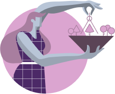

In this scenario, pursuing different options within the relationship
gets more and more attractive to Enthusiasts since they reject the
idea of feeling trapped in a relationship that makes them unhappy. If
the situation continues to deteriorate, Reformers will lose respect
for their partner, becoming pushier and demanding. Enthusiasts will
try to avoid their company and might feel let down and depressed,
taking all types of emotional connection away from Ones.
Both of them might adopt an indifferent attitude towards each other, making reaching an agreement and compromise even more difficult. Eventually, Ones will criticize their partner for a certain period, until some event casts the fatal blow to the relationship.
Both of them might adopt an indifferent attitude towards each other, making reaching an agreement and compromise even more difficult. Eventually, Ones will criticize their partner for a certain period, until some event casts the fatal blow to the relationship.
Enneagram Type 1 In A Relationship With Type 8
How Does Each Enneagram Type Enhance the Relationship?
Enneagram type 1s and Enneagram Type 8s (Challengers) have many similarities. One of them is their true desire to fight for truth and justice. Although it might be in different ways and for many different reasons, they often feel that it’s their responsibility to stand against injustice or inequity whenever they see it. Both Enneagram types tend to perceive themselves as people whose duty is to protect the weak and defenseless, to fight the wrong and to make the world a better place.
Both these types are action-oriented. So, if they point their energy and attention towards social causes, they will achieve big goals not only for their family, but also for their community, country and the world itself. Both of them are willing to make big sacrifices for what they believe is right.
They are known for their virtue, vision, purposefulness, practicality and perseverance in supporting whatever they believe in. Generally speaking, Enneagram type 1s bring a sense of ideal truths and justice to the table whereas Enneagram type 7s bring a more practical and immediate approach to these concepts held by Reformers. This combination can be truly powerful: as they have a clear sense of purpose and an unequivocal personal mission, they can achieve many things together.
On one hand, Ones can find Eights to be exciting, fun, passionate and physical – all traits they generally repress. On the other hand, Eights admire Ones conviction and recognize that Ones are as firm, decisive, purposed and determined as they are. Although some people think that these two types are opposites, they can both learn a lot from each other, making their relationship a really nutritive one. All of this is possible if they are willing to be open-minded and accept different reactions, values and ideas.
Enneagram type 1s and Enneagram Type 8s (Challengers) have many similarities. One of them is their true desire to fight for truth and justice. Although it might be in different ways and for many different reasons, they often feel that it’s their responsibility to stand against injustice or inequity whenever they see it. Both Enneagram types tend to perceive themselves as people whose duty is to protect the weak and defenseless, to fight the wrong and to make the world a better place.
Both these types are action-oriented. So, if they point their energy and attention towards social causes, they will achieve big goals not only for their family, but also for their community, country and the world itself. Both of them are willing to make big sacrifices for what they believe is right.
They are known for their virtue, vision, purposefulness, practicality and perseverance in supporting whatever they believe in. Generally speaking, Enneagram type 1s bring a sense of ideal truths and justice to the table whereas Enneagram type 7s bring a more practical and immediate approach to these concepts held by Reformers. This combination can be truly powerful: as they have a clear sense of purpose and an unequivocal personal mission, they can achieve many things together.
On one hand, Ones can find Eights to be exciting, fun, passionate and physical – all traits they generally repress. On the other hand, Eights admire Ones conviction and recognize that Ones are as firm, decisive, purposed and determined as they are. Although some people think that these two types are opposites, they can both learn a lot from each other, making their relationship a really nutritive one. All of this is possible if they are willing to be open-minded and accept different reactions, values and ideas.

31
Enneagram 1 in Relationships